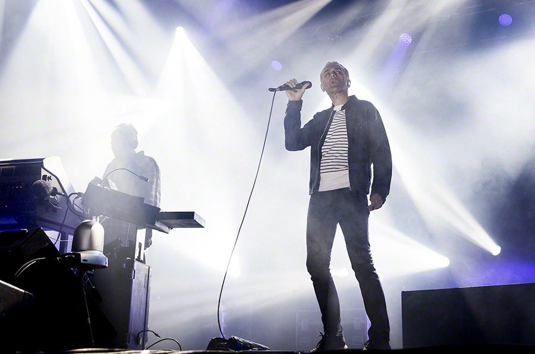

Underworld makes a massive return


.jpg){kind=link}
Along with their compatriots the Chemical Brothers, UK band Underworld are one of the world’s most seminal live electronic acts. Fans will be overjoyed to hear that they’re not fading into obscurity; instead they’ve got both a new album and a massive European tour lined up before the end of the year.
Oblivion with Bells is due for late October, and the first single will be the track Crocodile. The boys are remembered in Australia for their massive Big Day Out performances, so let’s hope we see them back over here before too long!
Catch Underworld playing live at the following dates across Europe, and click the video below to watch a sample of one of their performances earlier this year…
June Saturday, 30: Wild In The Country, Knebworth, UK
July Thursday, 5: Super Bock, Super Rock Festival, Lisbon, Portugal
July Saturday, 7: Monegroes Desert Festival, Monegroes, Spain
September Sunday, 9: Hollywood Bowl, Los Angeles, USA
September Tuesday, 11: Red Rocks Amphitheatre, Denver, USA
September Friday, 14: Central Park Summer Stage, New York, USA
October Monday 8: Guildhall, Southampton, UK
October Tuesday, 9th: Academy, Birmingham, UK
October Wednesday, 10th: UEA, Norwich, UK
October Friday, 12: Northumbria University, Newcastle upon Tyne, UK
October Saturday, 13: Academy, Glasgow, UK
October Sunday, 14: Rock City, Nottingham, UK
October Tuesday, 16: Apollo, Manchester, UK
October Wednesday, 17: Roundhouse, London, UK
October Friday, 26: Tonhalle, Munich, Germany
October Saturday, 27: Electronic Beats Festival, Prague,
October Tuesday, 30: Gasometer, Vienna, Austria
October Wednesday, 31: Electronic Beats Festival, Bratislava,
November Thursday, 1: Cocoon Club, Frankfurt, Germany
November Saturday, 3: Columbiahalle, Berlin, Germany
November Tuesday, 6: Paladium, Koln, Germany
November Thursday, 8: The Docks, Hamburg, Germany
November Friday, 9: Heineken Music Hall, Amsterdam, Holland
November Saturday, 10: I Love Techno, Gent, Belgium